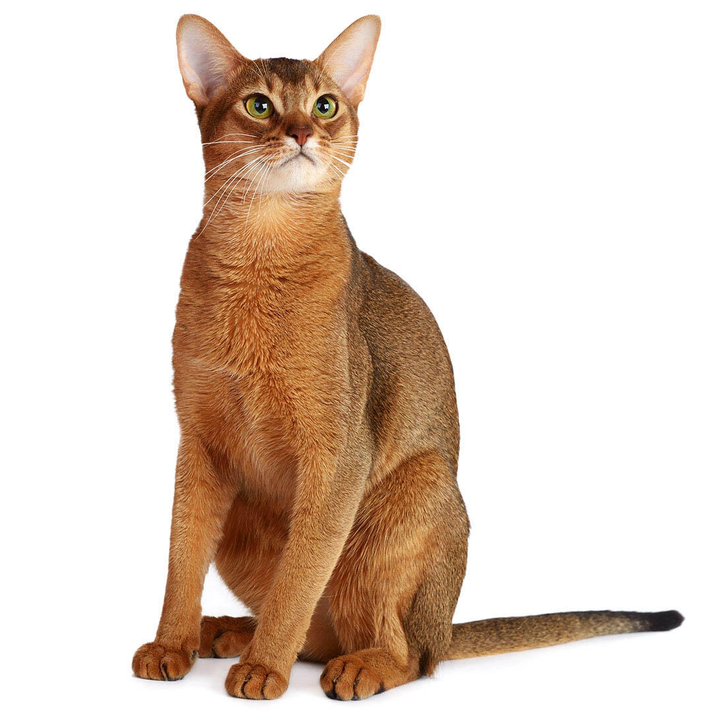

Perhaps a representative of one of the most ancient breeds in the world will not sit on your lap, but she will love your household and will be very sociable.
She loves to play and relax and does not change her habits as she gets older. The Abyssinian cat's personality combines the desire to run around the house and lie quietly, notes the American Cat Fanciers Association.
The Abyssinian loves to make noise and can follow you around or climb onto the highest shelf, enjoying the way it distracts you from your work.